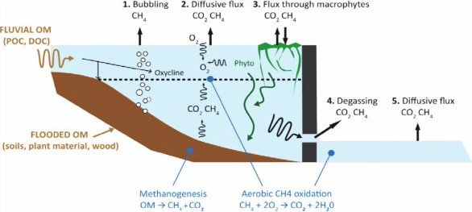

Theoretical Background
Contribution of Reservoirs to Global Emissions
Reservoirs contribute significantly to the global emissions of carbon dioxide (CO\(_2\)), methane (CH\(_4\)), and nitrous oxide (N\(_2\)O). Recent estimates place global reservoir greenhouse gas (GHG) emissions at approximately ∼1.076 PgCO\(_{2e}\)/year (Harrison et al. [1]) - a third of the emissions of the whole of the European Union in 2022. According to Soued et al. [2], reservoirs accounted for 5.2% of CH\(_4\) and 0.2% of CO\(_2\) anthropogenic emissions in 2022, with a climate impact comparable to the aviation sector and about 2% of global man-made greenhouse gas emissions.
Global Carbon Cycle
The Global Carbon Cycle describes the pathways of greenhouse gas (GHG) fluxes between different parts of the land, water, man-made infrastructure, and the atmosphere. These fluxes determine the equilibrium concentrations of GHGs in the atmosphere, which in turn drive the Earth’s climate.
Reservoirs are integral to the Global Carbon Cycle and are interlinked with other components involved in carbon production and sequestration, such as natural landscapes, including moving and standing water bodies, and landscapes transformed by human activity. The latter includes land use changes due to agriculture, farming, urbanization, and more. These interconnections make it challenging to quantify reservoir emissions, as distinguishing between emissions directly attributable to reservoir creation (Prairie et al. [3]) and the natural emissions of the landscape is intrinsicly difficult. It is also challenging to quantify the portion of emissions elevated by human activity, such as nutrient exports to aquatic systems, specifically linked to reservoir creation versus what would have occurred in unaltered water bodies, albeit over different time scales and distances (see Displaced Emissions).
Understanding the natural and anthropogenic GHG fluxes of reservoirs is essential for appropriate quantification of the Global Carbon Cycle driving the climate change.

Global Carbon Cycle, Source: https://www.usgs.gov/media/images/usgs-carbon-cycle, Created by: Alison Mims
Why Reservoirs Emit Greenhouse Gases
Reservoirs alter the carbon cycle of the natural landscape, directly leading to net greenhouse gas (GHG) emissions.
Following the impoundment, the river is transformed into a standing pool of water with a longer residence time and greater depth. This allows various biochemical and physical processes to occur within the reservoir, leading to the production of greenhouse gases.
When a landscape is flooded, the natural emissions and pre-impoundment state are replaced by a body of water containing organic matter from the flooded soil and vegetation. This organic matter decomposes more rapidly in the aquatic environment, increasing the GHG stock in the water column, which is then released into the atmosphere through various physicochemical mechanisms - see Reservoir Emission Pathways.
Reservoirs often stratify into layers (strata) with different physicochemical properties, such as oxygen or nutrient concentrations and temperature levels. This stratification creates conditions that support various biochemical processes, creating an organic carbon cycle within the reservoir. The bottom layers lack molecular oxygen, leading to anoxic and anaerobic conditions that support methanogenesis, the production of methane (CH\(_4\)). The organic matter fueling methane production in these deeper layers comes from flooded soils and sediments entering the reservoir via rivers and surface runoff.
Methane produced in the reservoir’s deeper regions may remain at lower depths or move to the upper layers as bubbles, diffuse, or be transported by plants, eventually reaching the atmosphere. Some CH\(_4\) is converted to carbon dioxide (CO\(_2\)) by methane-oxidizing bacteria (MOBs), which can be aerobic (oxygen-driven) or anaerobic (nitrite- and nitrate-driven). Methane pools in the lower reservoir regions can persist for long periods or be released to the atmosphere during water drawdowns or when water from deeper areas is released downstream via outlets positioned at the dam’s lower parts. In the latter case, CH\(_4\) emissions occur in the river sections downstream of the reservoir through a process called degassing.
Carbon dioxide (CO\(_2\)) emissions result from the mineralization of organic matter, primarily soluble but also particulate, entering the reservoir from the upstream catchment. This process mainly occurs via diffusion and macrophytes. While the reservoir provides conditions that support greater mineralization by offering longer residence times, a large portion of this organic matter would have been mineralized in natural aquatic systems regardless of the reservoir’s presence. In this case, reservoirs alter the carbon cycle by displacing emissions from downstream to upstream in the catchment rather than significantly increasing overall emissions.
The alterations in the carbon cycle due to impoundment lead to new (net) GHG emissions, which vary over time. These emissions are most intense in the first years following reservoir construction and decrease as the reservoir ages, with the most significant reduction occurring in the initial 5-10 years after impoundment.
The total emissions from a reservoir over its lifetime and their evolution depend on various factors, including reservoir characteristics, catchment properties, and climatic conditions, which influence the emissions of individual gases (CH\(_4\), CO\(_2\) and N\(_2\)O) and their specific emission pathways.
The transformation of landscape from pre-impoundment to post-impoundment and the major emission routes for CO\(_2\) and CH\(_4\) in the reservoir are visualised in the figure below.

Landscape transformation from a river to a reservoir. Source: Prairie et al. [3].
The G-Res Emissions Model
For the estimation of CO\(_2\) and CH\(_4\) emissions we use the G-Res model (Prairie et al. [4], Prairie et al. [5]). G-Res is based on a number of statistical regression models, each estimating emission flux via a single emission pathway - see Reservoir Emission Pathways. The regressions use information about the landscape, the geomorphological properties of the reservoir and the averaged climatic conditions in the catchment. This data can be sourced from publicly available geospatial data hence avoiding the need for field measurements at individual reservoir locations.
The unique characteristic of G-Res lies in its ability to discern the true net GHG footprint resulting from the conversion of a river to a reservoir. For this purpose it calculates the following GHG emission mass balances:
Pre-impoundment GHG footprint of the landscape, i.e. the catchment, the reservoir area and the impounded river area.
Reservoir emissions rates for each gas and each of its emission pathways as functions of various environmental settings of the reservoir, i.e. climatic, geographic, edaphic and hydrologic.
The evolution of emission fluxes for each gas and each emission pathway over the lifetime of the reservoir.
Displaced emissions, i.e. emissions that would have occurred in other parts of the aquatic environment irrespective of the presence of the reservoir.
Emissions in the reservoir related to human activity in the catchment, i.e. resulting from increased emissions due to additional nutrients and organic matter entering the reservoir from athropogenic sources, aka. Unrelated anthropogenic sources.
The N\(_2\)O Emissions Model
Note
Modelling of nitrous oxide emissions is at an experimental stage. We are working on establishing the state-of-the-art models and verifying that all the calculations are correct. We shall update this section as soon as we are confident that the predictions from our software align with the values reported in the literature.
Reservoir Emission Pathways for CO\(_2\) and CH\(_4\)
The figure below, included in the IPCC 2007 report, illustrates the pathways of greenhouse gas (GHG) emissions in reservoirs. It shows that organic matter (OM) can be either fluvial, consisting of dissolved organic matter (DOM) or particulate organic matter (POM), or originate from flooded vegetation and soils. The figure distinguishes five emission pathways: (1) methane (CH\(_4\)) bubbling, (2) carbon dioxide (CO\(_2\)) and CH\(_4\) diffusion within the reservoir, (3) CO\(_2\) and CH\(_4\) flux through macrophytes, (4) CO\(_2\) and CH\(_4\) degassing downstream of the reservoir, and (5) CO\(_2\) and CH\(_4\) diffusion downstream of the reservoir. It highlights methanogenesis in the benthic zone and aerobic CH\(_4\) oxidation in the upper aerobic layers of the reservoir. Macrophytes facilitate CO\(_2\) and CH\(_4\) fluxes into the atmosphere and contribute to carbon and nutrient sources for methanogenesis when they die and decompose.
Other pathways and processes not included in this illustration also contribute to GHG emissions. For instance, emissions can result from the drying and rewetting of sediments in the littoral areas of the reservoir due to water abstraction, as discussed by Keller et al. [6], Marcé et al. [7], Kosten et al. [8].
However, many known emission pathways are still not well understood due to the complexities of the fundamental processes governing them, the availability of measurements for model calibration and validation and uncertainties and difficulties associated with measuring emissions and various environmental parameters in water bodies. Given the current limitations in scientific understanding and data availability, the G-Res model is currently the most comprehensive emissions model. It describes the following emission pathways: (1) diffusive CO\(_2\) emissions, (2) diffusive CH\(_4\) emissions, (3) CH\(_4\) emissions due to ebullition (bubbling), and (4) CH\(_4\) emissions due to degassing.
{kind=link}
Pathways of GHG Emissions from a Reservoir. Source: IPCC 2007.
Why is it important to estimate GHG emissions from reservoirs?
As highlighted in the sections Contribution of Reservoirs to Global Emissions and Global Carbon Cycle reservoir emissions are significant on a global scale and, therefore, have a non-negligible impact on the Earth’s climate. Accurate quantification of these emissions worldwide is necessary to estimate the total anthropogenic GHG emissions, which are used to determine the current climate and its future projections.
On a national level, estimating reservoir emissions can support climate planning instruments, such as Nationally Determined Contributions (NDCs), and in the assessment of GHG budgets for entire countries, regions, and companies. For example, the Greenhouse Gas Reporting Program (GGRP) of the United States Environmental Protection Agency is one such initiative. These and other efforts can aid in policy and technological planning related to climate adaptation.
Finally, estimating the GHG emissions of planned reservoirs is crucial for designing carbon-efficient reservoir infrastructure investments. Studies, such as Hansen et al. [9], have shown that reservoirs can emit vastly different amounts of GHGs depending on their location. Therefore, to avoid construction of polluting reservoirs, reservoir emissions should be considered during strategic reservoir planning alongside other economic, technical, and environmental objectives.
Literature
John A. Harrison, Yves T. Prairie, Sara Mercier-Blais, and Cynthia Soued. Year-2020 Global Distribution and Pathways of Reservoir Methane and Carbon Dioxide Emissions According to the Greenhouse Gas From Reservoirs (G-res) Model. Global Biogeochemical Cycles, 35(6):e2020GB006888, 2021. e2020GB006888 2020GB006888. URL: https://agupubs.onlinelibrary.wiley.com/doi/abs/10.1029/2020GB006888, arXiv:https://agupubs.onlinelibrary.wiley.com/doi/pdf/10.1029/2020GB006888, doi:https://doi.org/10.1029/2020GB006888.
Cynthia Soued, John A. Harrison, Sara Mercier-Blais, and Yves T. Prairie. Reservoir CO2 and CH4 emissions and their climate impact over the period 1900–2060. Nature Geoscience, 15(9):700–705, Sep 2022. URL: https://doi.org/10.1038/s41561-022-01004-2, doi:10.1038/s41561-022-01004-2.
Yves T. Prairie, Jukka Alm, Jake Beaulieu, Nathan Barros, Tom Battin, Jonathan Cole, Paul del Giorgio, Tonya DelSontro, Frédéric Guérin, Atle Harby, John Harrison, Sara Mercier-Blais, Dominique Serça, Sebastian Sobek, and Dominic Vachon. Greenhouse Gas Emissions from Freshwater Reservoirs: What Does the Atmosphere See? Ecosystems, 21(5):1058–1071, Aug 2018. URL: https://doi.org/10.1007/s10021-017-0198-9, doi:10.1007/s10021-017-0198-9.
YT Prairie, J. Alm, A. Harby, S. Mercier-Blais, and R. Nahas. The GHG Reservoir Tool (G-res) Technical documentation v2.1 (2019-08-21). Technical Report, UNESCO/IHA research project on the GHG status of freshwater reservoirs. Joint publication of the UNESCO Chair in Global Environmental Change and the International Hydropower Association, 2017. 76 pages.
Yves T. Prairie, Sara Mercier-Blais, John A. Harrison, Cynthia Soued, Paul del Giorgio, Atle Harby, Jukka Alm, Vincent Chanudet, and Roy Nahas. A new modelling framework to assess biogenic GHG emissions from reservoirs: The G-res tool. Environmental Modelling & Software, 143:105117, 2021. URL: https://www.sciencedirect.com/science/article/pii/S1364815221001602, doi:https://doi.org/10.1016/j.envsoft.2021.105117.
Philipp S. Keller, Rafael Marcé, Biel Obrador, and Matthias Koschorreck. Global carbon budget of reservoirs is overturned by the quantification of drawdown areas. Nature Geoscience, 14(6):402–408, Jun 2021. URL: https://doi.org/10.1038/s41561-021-00734-z, doi:10.1038/s41561-021-00734-z.
Rafael Marcé, Biel Obrador, Lluís Gómez-Gener, Núria Catalán, Matthias Koschorreck, María Isabel Arce, Gabriel Singer, and Daniel von Schiller. Emissions from dry inland waters are a blind spot in the global carbon cycle. Earth-Science Reviews, 188:240–248, 2019. URL: https://www.sciencedirect.com/science/article/pii/S0012825218301971, doi:https://doi.org/10.1016/j.earscirev.2018.11.012.
Sarian Kosten, Sanne van den Berg, Raquel Mendonca, Jose R. Paranaiba, Fabio Roland, Sebastian Sobek, Jamon Van Den Hoek, and Nathan Barros. Extreme drought boosts co2 and ch4 emissions from reservoir drawdown areas. Inland Waters, 8(3):329–340, 2018. URL: https://doi.org/10.1080/20442041.2018.1483126, arXiv:https://doi.org/10.1080/20442041.2018.1483126, doi:10.1080/20442041.2018.1483126.
Carly Hansen, Rachel Pilla, Paul Matson, Bailey Skinner, Natalie Griffiths, and Henriette Jager. Variability in modelled reservoir greenhouse gas emissions: comparison of select us hydropower reservoirs against global estimates. Environmental Research Communications, 4(12):121008, jan 2023. URL: https://dx.doi.org/10.1088/2515-7620/acae24, doi:10.1088/2515-7620/acae24.